←
12345678910111213
→
Shaping, binding and inlaying the peghead.
- 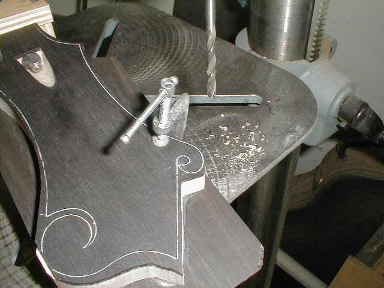
- 107) A 3/16" drill is used to drill the hole in the small scroll of the peghead. It will be enlarged a bit later with filing and sanding. The outline of the peghead is traced on the ebony with a white ballpoint "milky pen". I discovered these in a set my daughter has. Marking ebony has always been a problem. The milky pens solve the problem.
- 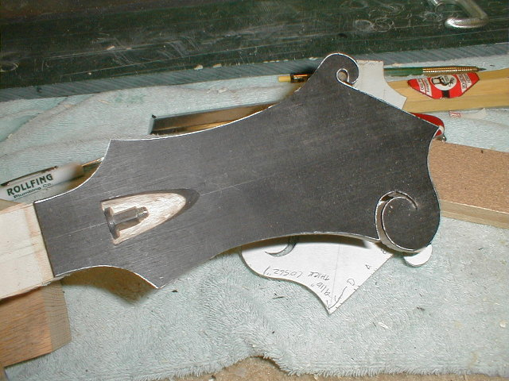
- 108) The intial cuts are made on the bandsaw in a fixture that holds the fingerboard plane parallel to the saw table.
- 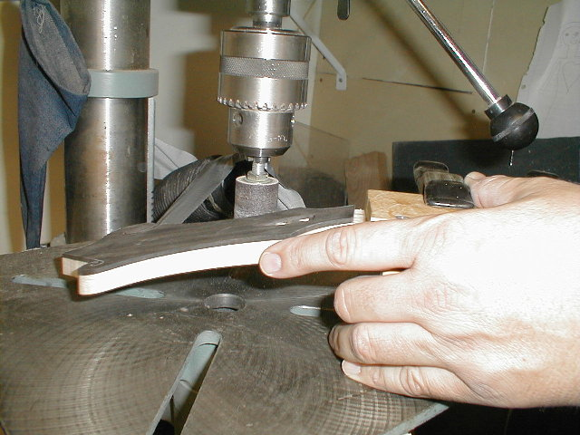
- 109) After the bandsaw, sanding drums in the drill press do some final shaping.
- 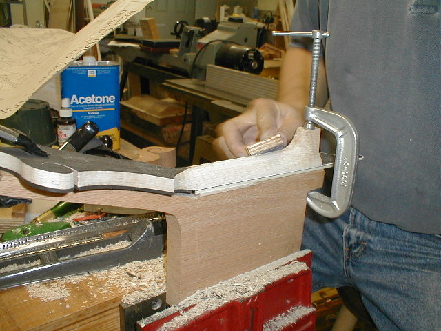
- 110) Back to the carving fixture. After getting the neck shaped, 80 grit sandpaper is used on a 5" block to level all the little bumps out.
- 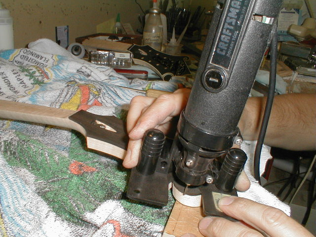
- 111) The peghead is marked with a pencil for the binding. A Dremel tool with a spiral carbide bit is put in a router base and the edge of the veneer is trimmed back to the pencil line.
- 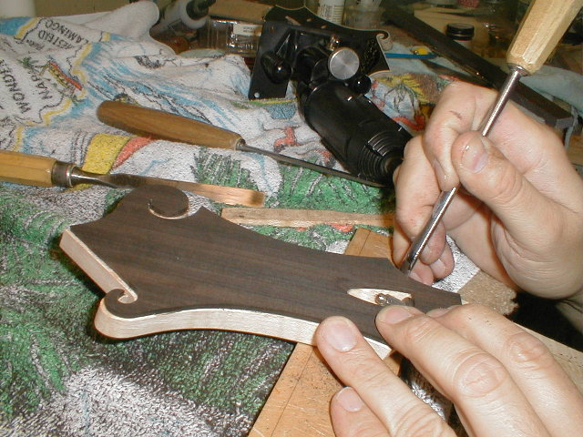
- 112) I can get a pretty clean line cutting free-hand with the Dremel, but a little cleanup with a chisel is usually needed.
- 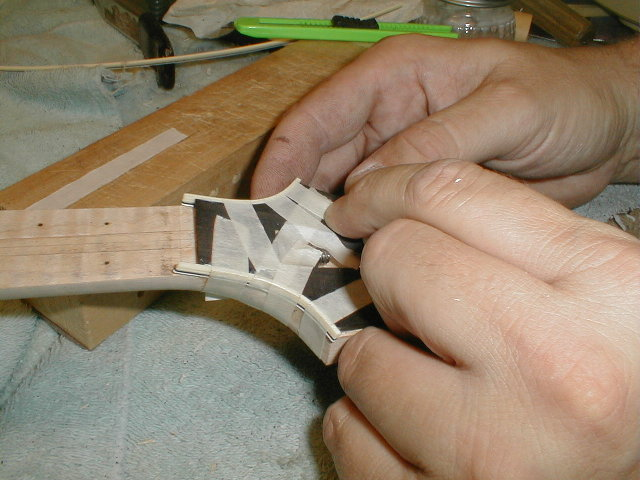
- 113) Binding is pre-bent with the heat gun and glued on. Strips of masking tape hold it tight while the glue dries.
- 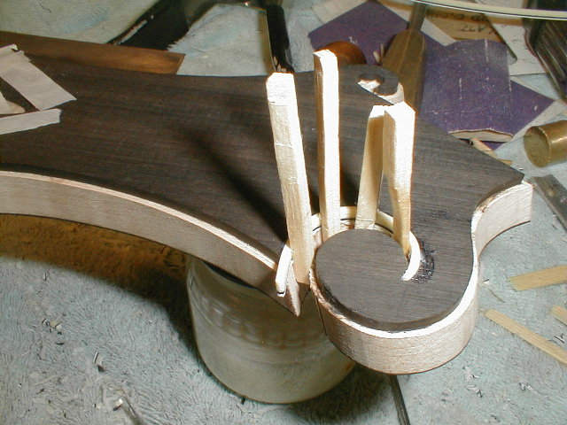
- 114) Instead of using tape in the scroll area, I use small spruce wedges to hold it in place.
- 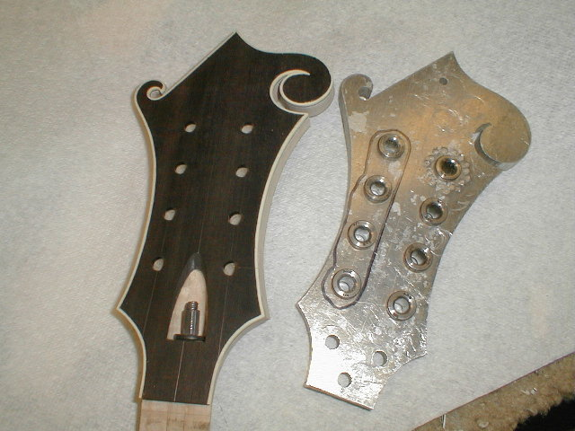
- 115) After the binding is scraped, I lay out for the tuner holes. The drilling fixture on the right was given to me and has the proper spacing for the Waverly tuners.
- 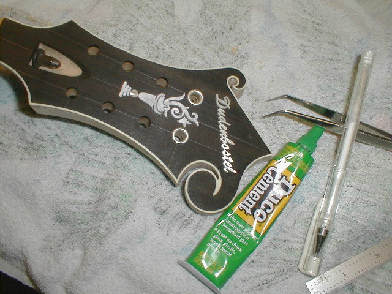
- 116) After drill for the tuners, I position the inlay on the peghead and tack glue it in place with Duco cement.
- 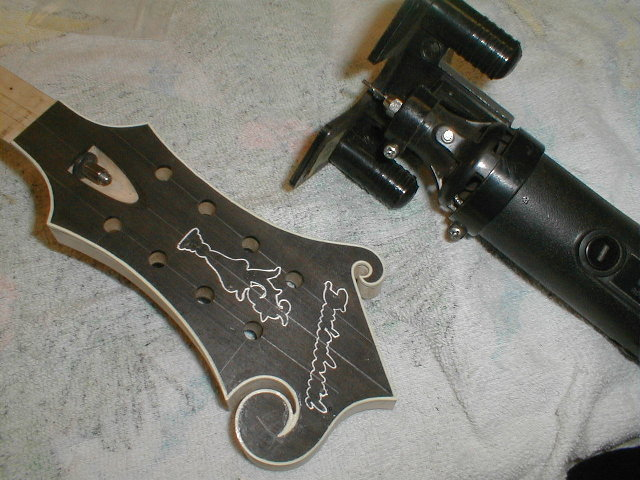
- 117) white ballpoint pen is used to mark around the inlay. A few drops of acetone are applied to
dissolve the glue and it is removed. Here's you see the line from the pen.
- 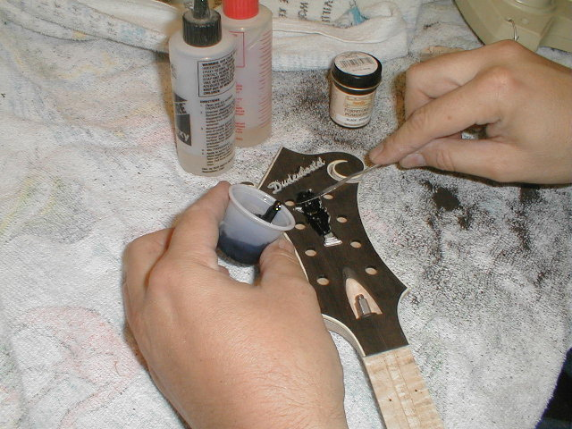
- 118) Once routed, the inlay is placed in the cavity and glued in place with a couple of drops of thin superglue. This prevents it from moving around while the filler is applied. Black fresco powder is mixed with epoxy and warmed with a heat gun (to make it flow better). It is then forced into the cavity around the inlay.
- 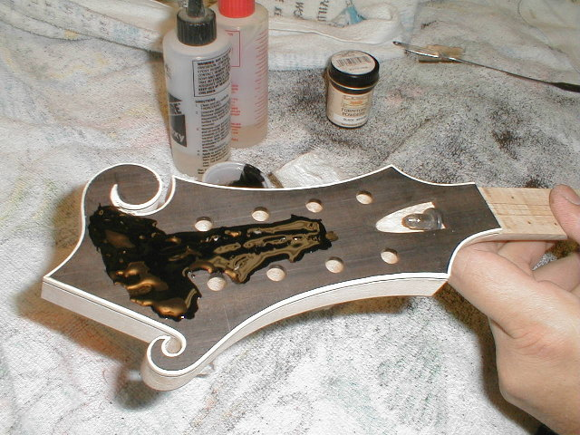
- 119) Here's what it looks like once all the filler is in place. The heat gun is used to warm the filler once again to help it flow into all the little nooks and crannies around the inlay.
←
12345678910111213
→
© Lynn Dudenbostel, 2002.